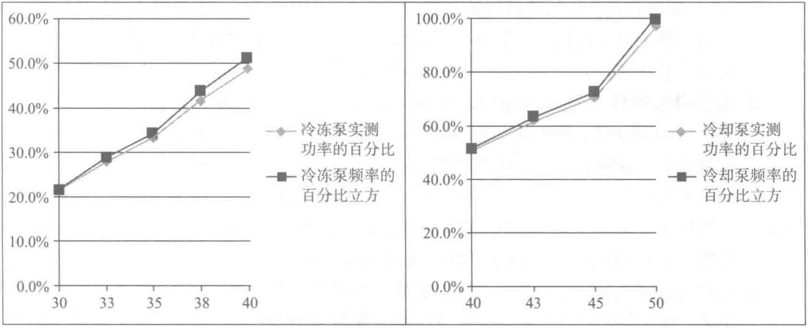
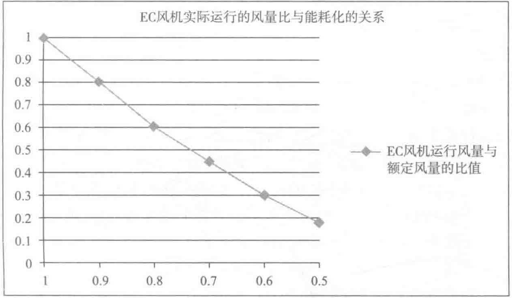

（3）精密空调系统的优化控制
京东集团华东数据中心的精密空调全部采用EC风机，对EC风机的优化控制可以帮助降低精密空调系统的能耗。如图10-54所示，横坐标表示EC风机实际运行风量与额定风量的比值，纵坐标表示EC风机实际功耗与额定功耗的比值。可以看出，随着EC风机风量的减少，功耗不断下降。现场实测试数据显示，50%以下风量时，功耗下降并不明显，而且运行风险增大，所以EC风机的风量设置不宜低于50%。当主机房IT负载未达到满载时，增加精密空调运行数量，降低单台空调风量有助于节能。


（4）照明系统的优化控制
京东集团华东数据中心所有主机房均采用分布式照明智能控制系统。人员进入机房间